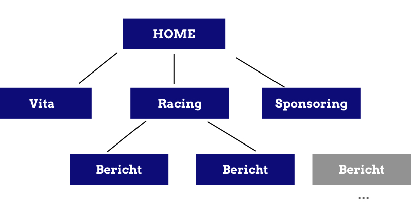
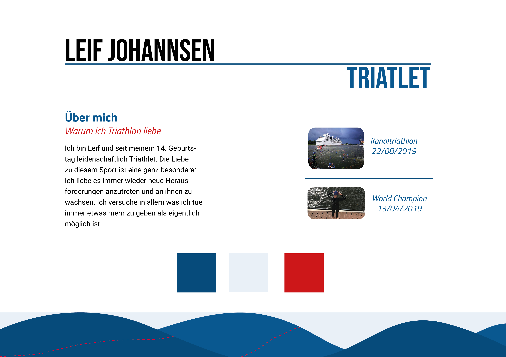
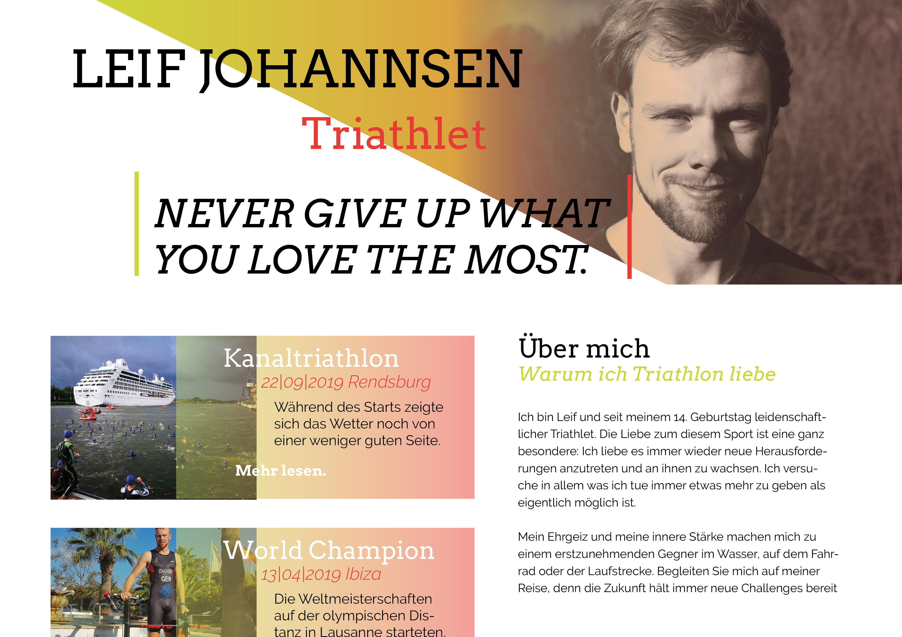
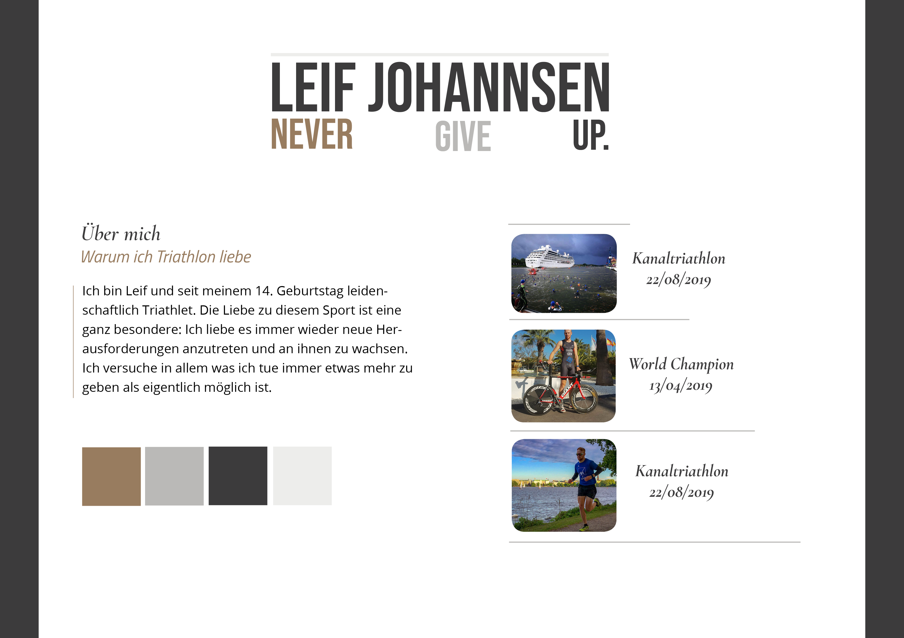
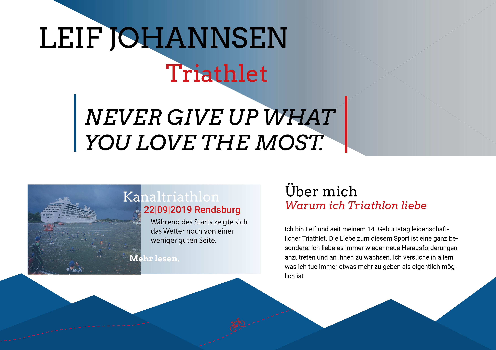
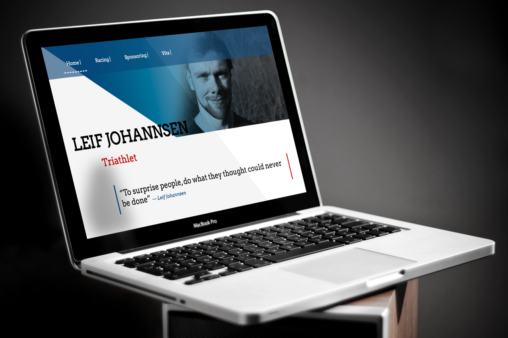

Dokumentation
Frontend Design
Zur Hausarbeit
im Sommersemester 2020 | Abgabetermin: 22.06.2020
Arbeitsgruppe:
- Marleen Johannsen | 650735 | BA-MI-04
- Nina Jahnke | 00000 | BA-MI-04
Die Aufgabe
Entwerfen Sie für eine reales oder hypotetisches Projekt, Person, Firma oder Institution eine Website. Das kann z.B. ein Portfolio für Sie oder eine Site für eine innovative (Web-/Design-/…)Konferenz oder eine Veranstaltungsreihe sein. In der Site sollen neue Möglichkeiten im Webdesign durch Grid-Layout, Flex-Box, Transforms, Shapes etc entwickelt und erprobt werden. Wichtig dabei: Es müssen reale bzw. realistische Inhalte verwendet werden.
Das Konzept
- Thema
- Sponsoring Website
- Ziel
- Anwerbung von Sponsoren und “Portfolio”, Präsentation des Sportlers
Beschreibung
Die Website zur Hausarbeit 2020 im Fach Frontend Design wird eine Sponsoring und Portfolio Seite sein. Es soll Triathlet und Sportler Leif Johannsen vorgestellt werden und ein Überblick über Leistungen und Rennen gegeben werden. Dabei liegt der Fokus auf einer emotionalen Darstellung mit dem Ziel mögliche Sponsoren zu werben. Somit wird also die Person, der Sportler “vermarktet”. Leif Johannsen ist ein Triathlet aus der Region, der bereits erfolgreich bei internationalen Triathlon Wettkämpfen aktiv war, allerdings bisher wenig Sponsoren erreichen konnte, aufgrund von fehlender Präsenz im Internet. Wir wollen dafür eine emotionale und knackige Website entwickeln.
Wir wollen uns auf eine möglichst flache und einfache Informationsstruktur konzentrieren. Seiten die wir gestalten wollen, sind vor allem eine Homepage, die mit emotionalen Bildern und Texten spielt. Hier werden wichtige Inhalte angeteasert, aktuelle News und kommende Veranstaltungen. Außerdem soll hier vor allem die Person und das Thema mit großen Bildern und Zitaten inszeniert werden.
Dann soll es eine Übersicht über kommende Rennen und eine Übersicht über bereits erhaltene Auszeichnungen geben. Dazu kommt dann eine Detailseite, die das Rennen oder die Auszeichnung genauer erläutert. Eine Seite, die mögliche Sponsoring Partner zum Kontakt weiterleitet und eine Übersicht über mögliche Gegenleistungen und generelle Marketingmöglichkeiten (Verwendung von Firmenlogos auf Trikots, Social Media Werbung) gibt, soll gestaltet werden.
Auch ein Kontaktformular wird hier integriert. Des Weiteren wollen wir eine Bildergalerie erstellen, in der Bilder von Wettkämpfen zum Ansehen, Inspirieren und zum Download bereitstehen. Zuletzt gibt es noch eine Seite “Über Mich”, in der der Sportler beschrieben wird und eine kleine Übersicht über den Lebenslauf und sportlichen Werdegang beschrieben wird. Zusätzlich kann es noch die Möglichkeit einer Einbettung von Social Media geben, in jedem Fall aber eine Weiterleitung zu relevanten Plattformen wie Instagram oder Facebook.
Informationsarchitektur
Aus dem Konzept entwickelten wir eine Informationsarchitektur. Die Titel der Seiten sollten modern und kurz, sowie aussagekräftig sein. Die Hierarchie sollte flach bleiben.
Design und Gestaltung
Styletiles
  Motivation und Idee
Da unsere Website das Portfolio und Aushängeschild eines Sportler sein wird, wollten wir ein einfaches, modernes, junges und dynamisches Erscheinungsbild. Wir wollen die Website dynamisch-aufregend und als Statement gestalten - mit großen Titeln, Versalien und vielen Bildern. Die Farben sollten kontrastreich sein, allerdings wollten wir keine allzu bunte Seite entwerfen und reduzierten uns daher auf zwei Farbwerte. Zusätzlich gestalten wir auf viel Weißraum. Die Elemente sollten viel Platz erhalten. Auf eine klassische Navigation an der Seite oder andere Standard-Web Elemente wollten wir verzichten und plakativ gestalten. Im Triathlon gibt es drei Sportarten und wir haben dies auch auf unsere Gestaltung übernommen und dreiteilig gestaltet. Im Raster und in den Farben. Dynamische Schrägen sollten vorkommen um die Vorwärtsbewegung im Sport zu symbolisieren.
Da die Seite weniger informativ ist als vielmehr plakativ und einen Eindruck des Sportlers vermitteln soll haben unsere Inhalte viel Platz um zu wirken und wir arbeiten mit großen Bildern und großer Typografie.
Zusätzlich wollten wir die Stimmung aus dem Norden transportieren, den die Besonderheit des Sportlers Leif Johannsen ist, dass er aus dem hohen Norden stammt. Auch seine Persönlichkeit und sein Ehrgeiz sollten auf der Seite repräsentiert werden. Die Farben wählten wir daher nordisch und die Gestaltung jung und modern.
Dynamisch, klar, hell & nordisch. Sportlich. Jung.
Ich will eine einfache Website, die den Nutzer nicht mit Information überschwemmt, sondern einen epischen Moment erzeugt und außerdem nicht dem Standard entspricht
Die Website sollte gestalterisch auf jeden fall zum Triathleten passen - sprich eine sportliche Atmosphäre.
Wichtig ist für mich, dass ich sympatisch rüberkomme. Die Seite sollte vor allem modern sein und mich so auch als jungen, aufstrebenden Sportler darstellen.
Finales Design und finales Styletile
In unserem finalen Design haben wir mit einer kombination aus zwei Styletiles gearbeitet. Übernommen haben wir die Schrägen in den jeweiligen Headern, ebenso wie die Farbverläufe. Des Weiteren haben wir uns dafür entschieden die Überschrift und Fließtext Schrift aus zwei Styletiles zu kombinieren. Um die nördliche Verbundenheit zu übertragen haben wir uns bei der farblichen Gestaltung für ein Blau (#064b7b) und ein Rot entschieden (#cd1719). Da unser Header mit seinen Schrägen für viel Dynamik sorgt, haben wir uns überlegt den Footer ebenfalls mit einer gewissen Dynamik anzupassen.
Erläuterungen zum Design
Zur Typografie
Die Typografie nimmt auf unserer Seite einen hohen Stellenwert ein. Sie ist sehr präsent im oberen Abschnitt der Seite und sollte daher nicht langweilig sein, aber auch geradlinig und klar. Des Weiteren sollte sie gut zu unserer gestalterischen Umsetzung der Website passen.
Idee
Wir entschieden uns für eine Paarung aus einer Serifenschrift “Arvo” in den Schnitten regular und italic. Als Fließtextschrift nutzen wir Roboto, da diese in den kleineren Texten besser funktioniert und sehr minimalistisch ist. Beide Schriften harmonieren gut miteinander.
Vorgaben
Zur Farbgestaltung
Auch die Farben sind auf unserer Seite sehr prägnant und flächig eingesetzt. Wir nutzen eine Kombination aus dunkelblau (=Meer) und rot (=Feuer/Blut (“Feuer im Blut”))
Idee
Wir wollten mit unseren Farben den nordischen Flair erwecken. Daher sind unsere Farben denen der Schleswig-Holstein Flagge angelehnt. Außerdem verwenden wir auch dunkelblau-hellblau Verläufe in den Links und in den Headern. Dieser Verlauf soll modern wirken und den Fortschritt darstellen, die Entwicklung. Außerdem erweckt es die Idee vom Meer oder Wasser, was auch im Triathlon einer großer Aspekt ist.
Vorgaben
- Rot
- Blau
- Hellblau
- Transparentes Blau
- #cd1719
- ...
- ...
- ...
Zur Formsprache und Bildern
Idee
Bei unserer Formsprache haben wir im Header mit Schrägen gearbeitet. Der Footer besteht aus Dreiecken, welche die Berge symbolisieren sollen. #Auf dem Footer ist eine gestrichelte rote Linie mit einem Rennrad, welches für die Rennstrecke im Triathlon steht. Sowohl Header als auch Footer vermitteln Dynamik auf der Seite, ein Aufstreben, eine Entwicklung, welche für Triathleten von großer Bedeutung sind. Des Weiteren bestehen unsere Hovereffekte in der Navigationsbar aus einer gestrichelten Linie, womit der Footer wieder aufgegriffen wird. Auch in unseren 4:3 Bildern wird mit Hovereffekten gearbeitet. So werden beim drüberfahren der Maus über das Bild wieder die Schrägen mit aufgegriffen. Unsere Bilder sind nur in einem 4:3 und 16:9 Format verwendet worden, so bleibt die Seite in einem klaren Stil. Ebenso haben wir die Überlegungen mit vielen Weißräumen zu arbeiten umgesetzt. So bleibt die Website strukturiert und übersichtlich und wichtige Inhalte können besser aufgegriffen werden.
Vorgaben
- Bilder 16:9 als Vorschaubild: Elegant und schlank
- Kacheln: 4:3: Einfach und Kompakt, gut zu rastern
Zu Layout und Raster
Unser Layout zeichnet sich durch überlagernde Flächen aus. Wir haben damit angefangen, dieses grundsätzliche Element unseres Layouts zunächst zu erstellen, bevor wir mit dem Raster begannen.
Idee
Dabei erstellten wir auf zwei Seiten zusätzlich ein dekoratives Hintergrundelement mit kleinen Fahrradicons, das die inhaltlichen Elemente durch die Überlappungen besser verbinden sollten. Im nicht mobilen Format begannen wir dann mit dem Grid-Layout. Wir entwarfen ein 6-spaltiges Raster mit Grid-Areas um größtmögliche Flexibilität in der Gestaltung zu haben. Dabei nutzen wir meist zwei Spalten für ein Element, daher ist es optisch gesehen ein dreispaltiges Raster. Dreispaltig aufgrund der “the rule of three” und der Dreiteiligkeit im Triathlon. Auch zentrierte Elemente sind auf unserer Seite zu finden, die Eleganz und Hochwertigkeit im Raster erzeugen sollen und dieses etwas aus seiner “Kacheligkeit” auflösen soll. Unsere Vorschaubilder sind im dreispaltigen Raster ausgerichtet. Bei diesen Kacheln war es uns wichtig, dass der Zusammenhalt der Inhalte klar wird.
Eine Besonderheit ist die Aufteilung der Racing “Coming” und “Reports” in Tabs. Somit ist immer nur der relevante Inhalt zu sehen und die Seite wird nicht zu lang und unübersichtlich.
Vorgaben
- 6-spaltges Grid-Raster
- optisches 3-spaltiges Raster
- Wichtige Elemente zentral und links und rechts mit einer Spalte Platz für die freie Wirkung
- Überlagernde Flächen zur Erzeugung von Dynamik und Atmosphäre
Umsetzung in CSS und HTML
Vorgehen
Wir beginnen mit der Umsetzung in HTML und CSS. Dabei beginnen wir die ersten inhaltlichen Elemente in HTML Code zu übersetzen und fangen an die Inhalte grundsätzlich in Überschriften, Text, Listen und Bilder zu strukturieren. Dabei gehen wir von wenig spezifisch zu mehr spezifisch vor und ergänzen im weiteren Verlauf Elemente oder Container, die die Website noch besser strukturieren sollen.
Dann beginnen wir erstes CSS zu schreiben. Zunächst importieren wir Schriften und legen grundsätzliche Ränder (margins) und Darstellung von Überschriften und Text fest.
Wir starten mit der mobilen Darstellung und klammern jegliches Raster und Layout zunächst aus. Wir arbeiten mit floats für die Menüs und kleineres Layout. Immer wieder revidieren wir einzelne Elemente und verändern unser Design, überarbeiten es und verändern es. Dabei ist uns wichtig, immer die Atmosphäre zu erhalten. Die grundsätzliche Stimmung ist auch das, was wir als erstes implementieren.
Wir haben innerhalb des Entwicklungsprozesses viel gelernt und auch Inhalte immer wieder überdenken und vor allem umstrukturieren müssen. Eine grobe zeitliche Übersicht über unsere einzelnen Schritte sind im Zeitstrahl sichtbar.
Zum ZeitstrahlResponsive Design und Mediaqueries
Wir haben nach der Ausarbeitung der grundsätzlichen Atmosphäre uns als Nächstes mit der responsiven Aufarbeitung der Website beschäftigt. Dies erschien uns sehr wichtig, da eine moderne Website vor allem auch durch responsives Design auffällt. Dabei ist das Herz Element unserer Seite der Header mit der überlappenden Typografie. Dieses Element wollten wir auch im mobilen erhalten und haben hier die meisten Änderungen vorgenommen. Auch das Menü war ein wichtiger Punkt. ir wollten für die mobile Ansicht auf ein Burger Menü verzichten und haben uns für Tabs in einem Balken entschieden. Wir haben die Seite im responsive Mode nach und nach vergrößert und die Breaking Points identifiziert. Dort haben wir dann Mediaqueries eingefügt.
Finales Ergebnis
 Jetzt Website ansehen!Weiterführende Überlegungen
Das finale Ergebnis ist unserer Meinung nach eine moderne und schöne Website geworden. Gerne hätten wir noch weiterführende Interaktionen über Javascript realisiert, konnten dies zeitlich aber nicht mehr umsetzen.
Für eine Weiterentwicklung der Seite könnten wir uns vorstellen, die Header Elemente dynamisch von recht und links einfliegen zu lassen, um noch mehr Bewegung in die Seite zu bringen. Auch versetzte Scroll Effekte wären gut denkbar, die die Überladungen noch mal stärker hervorbringen könnte. Auch inhaltlich könnte die Seite noch weiter aufbereitet werden.
Selbständigkeit & Rechte
Zur EinverständniserklärungZu den verwendeten Bildern
Die auf der Website verwendeten Bilder stammen fast ausschließlich aus privaten Quellen und wurden von Leif Johannsen zur Verfügung gestellt.
>Wenige andere Bilder sind der Website pixabay.com oder unsplash.com entnommen sind frei kommerziell nutzbar.
Zur Selbständigkeit und Verbreitung
Hiermit erklären wir, die Hausarbeit selbständig und ohne fremde Hilfe erstellt zu haben.
Die Hausarbeit darf im Rahmen der Hochschule Flensburg gezeigt und verwendet werden, eine Veröffentlichung nach außerhalb (der HS Flensburg) ist nicht gestattet, da die Website vertrauliche persönliche Daten enthält.
- Nina Jahnke, 21.07.2020
- Marleen Johannsen, 21.07.2020